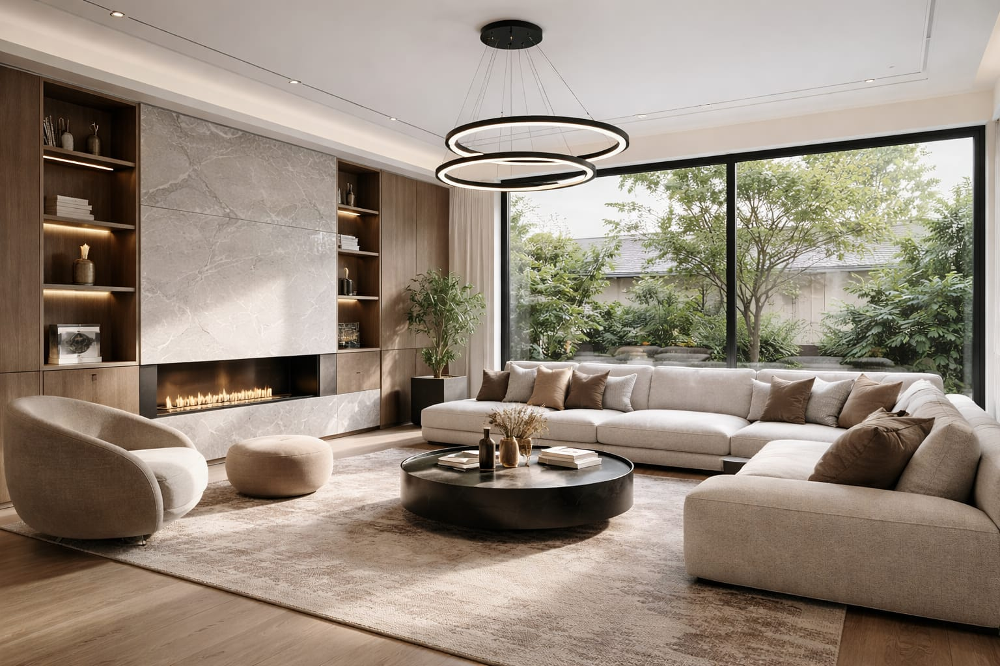
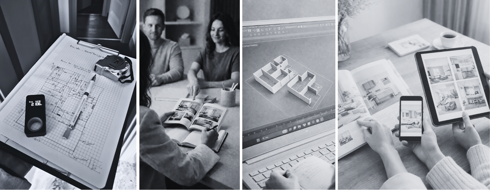

Yalın, işlevsel ve zamansız mekânlar
Konut ve ticari alanlar için mimari ve iç mekân tasarım hizmetleri sunuyoruz.
Hizmetler
01
Mimari Tasarım ve Konsept Geliştirme
02
İç Mekân Tasarımı
03
Yerleşim Planı ve 3 Boyut Görselleştirme
04
Elektrik ve Aydınlatma Projeleri
05
Mobilya Tasarımı ve Üretim Detayları
06
Uygulama ve Şantiye Yönetimi
Süreç
01
İlk Görüşme
İhtiyaç ve beklentiler belirlenir
02
Keşif ve Ölçü
Mekân detaylı şekilde analiz edilir
03
Konsept ve Tasarım
Projenin genel dili oluşturulur
04
Projelendirme
Teknik çizimler ve detaylar hazırlanır
05
Uygulama ve Üretim
Proje hayata geçirilir
